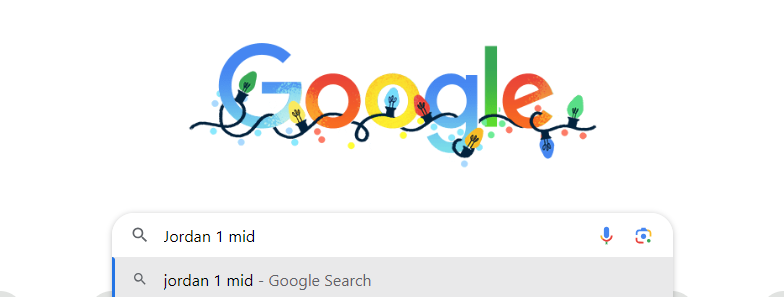
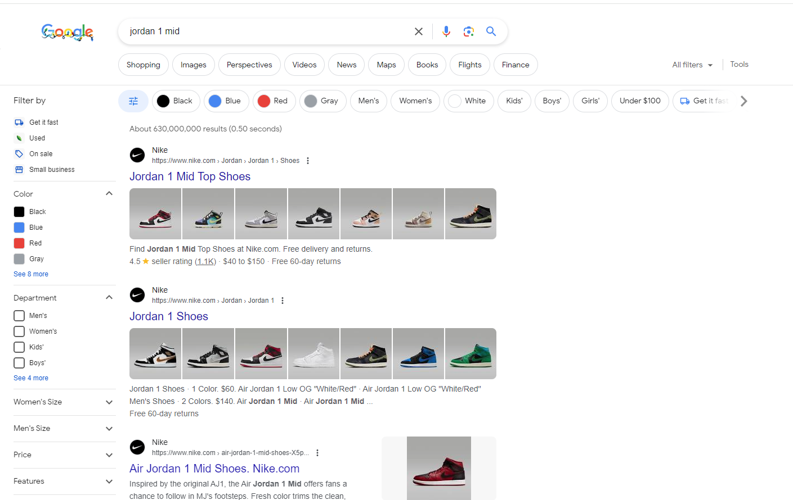
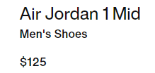
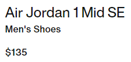
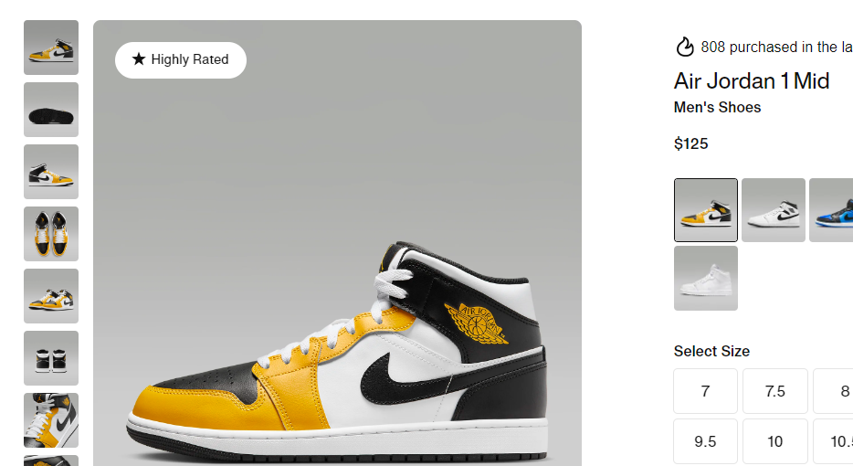
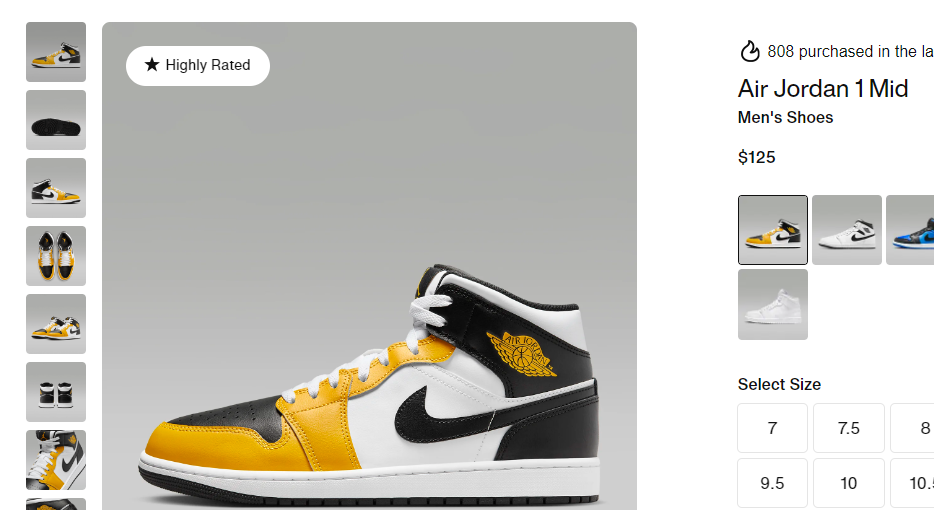

How It Works
The following steps explain the For The Low search engines process of finding the lowest-priced listing of the clothing item that you are looking for.
Step 1: Google Query
The program runs a Google search of the item from the user's input.
Step 2: Filter Google Results
The programs analyzes each web page result from the Google search. Too ensure that only trustworthy listings are shown to the user, the FTL program scans for specific websites that are known to retail authentic clothing items.
Step 3: Compare Prices
 The prices of each listing on web pages that FTL determines to be authentic are stored and compared to each other to determine the cheapest listing.
Step 4: Show Results

Finally, the FTL transports the user to the site with most affordable, authentic, retail listing of their search query.
Step 4: Show Results
Finally, the FTL transports the user to the site with most affordable, authentic, retail listing of their search query.
Here is a link to the FTL search engine source code.